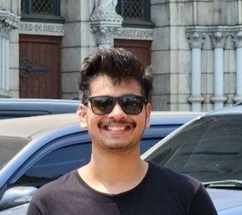

Full Stack Developer & Technical Analyst with expertise in MERN Stack, Computer Networks. I am currently diving in LLM's, GenAI.

I'm a Computer Science undergraduate at Vishwakarma Institute of Technology, Pune with a passion for building robust web applications and exploring cutting-edge technologies.
Currently working as a Technical Analyst at BMC Software, I specialize in analyzing technical issues and delivering solutions using Linux, Networking, Docker, and SQL.
My expertise includes building robust applications, implementing and developing web applications using the MERN stack. "I work at the intersection of networking and generative AI, focusing on how large models can be utilized to optimize, secure, and automate modern network systems."
Working on Linux, Networking, Docker, and SQL to analyze technical issues and deliver solutions.
Organized a 24-hour offline National hackathon at VIT Pune. Built an NGO website to enhance outreach and streamline donations.
Bachelor of Technology in Computer Science (GPA: 8.47 / 10.00)
Relevant Coursework: DSA (Java), MERN Development, Computer Networks, DBMS, OS, GenAI.
A decentralized mesh network enabling communication without traditional infrastructure like Wifi and Mobile Data, using IoT devices, laptops, and mobiles. Features UDP-based messaging, rebroadcasting, and flood protection.
HealthLink Central is a comprehensive platform designed to streamline healthcare management by connecting patients, doctors, and healthcare facilities. It offers a user-friendly interface for appointment scheduling, medical record management, and communication between healthcare providers and patients.
Implemented Random Forest Algorithm in Python to predict the likelihood of heart disease using a Kaggle dataset, achieving an exceptional accuracy of 99 percent.
Winner (3rd Place) - Developed an anti-plagiarism software prototype for Binus University, Indonesia
Image Forgery Detection Using Machine Learning: 8th International Conference on Smart Trends in Computing and Communications (SmartCom'24) - 2024
Contributor at the Social Winter of Code Season 5: Contributed to various Open Source Repositories with successful implementation of features and bug fixes
Mastering SQL – A comprehensive guide covering SQL fundamentals to advanced techniques with real-world applications.
Memory Management in Mobile OS – An in-depth look at how modern mobile operating systems handle memory allocation and optimization.
Feel free to reach out to me for any queries or collaboration opportunities. I'm always open to discussing new projects, ideas, or opportunities to be part of your vision.